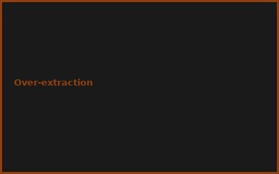
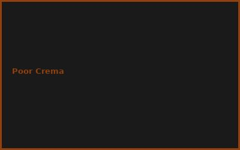
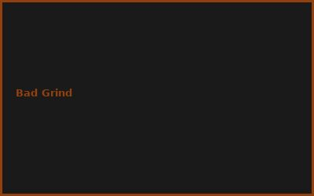

Kapitel 1: Pressure Hacks
- Syringenpress (9 bar ohne Strom!)
- Druckschnellkochtopf als Espresso-Maker
- DIY Manometer für Qualität
- Richtige Tamping-Kraft (30kg!)
Kapitel 2: Mühlen-Hack
# Espresso Grind Hack
# Burr Grinder statt Blade
grinder_cost = €30 (used)
grind_consistency = key!
optimal_size = 0.75mm
tamping_time = 30 seconds
Kapitel 3: Temperatur Control
- Kettle Method (27-30°C pre-heat)
- Thermometer für exakte Temps
- Flush-Routine vor jedem Shot
- Milk Steaming Hack
Kapitel 4: Timing & Extraction
- 25-30 Sekunden Shot (ideal!)
- 1:2 oder 1:3 Ratio (In:Out)
- Crema-Maximierung
- Blooming Technique
Kapitel 5: Bean & Water Quality
- Fresh Beans (2-3 Wochen Röstung)
- Filterwasser statt Leitungswasser
- Richtige Mahlung für Mühle
- Storage Tips (Vakuum)
Kapitel 6: Latte Art & Mikroschaum
- Steam Wand Positioning (1cm Tiefe)
- Milch-Whirlpool für Schaumqualität
- DIY Milchaufschäumer (€3!)
- Pouring Technique Mastery
💡 PRO-TIPPS
🎯 Tipp: Scalegewicht = MVP!
Problem: Inconsistent Shots | Lösung: €5 Küchenwaage = ±0.1g
💰 BUDGET-HACKS (99% SPAREN!)
💰 Hack: Syringe Press Espresso
Original: Espresso Machine: €1500+ | Hack: Syringe + Beans + Scale: €8 | Einsparnis: 99.5%
⚠️ FEHLER
❌ Fehler: Zu schnelle Extraktion
Was passiert: Wässrig statt creamy | ✅ Lösung: Feinere Mahlung + fester Tamp
🌐 COMMUNITY
r/espresso, Barista Forum, Specialty Coffee Assoc., DIY Coffee Hacker Groups
📸 Fehler-Galerie


